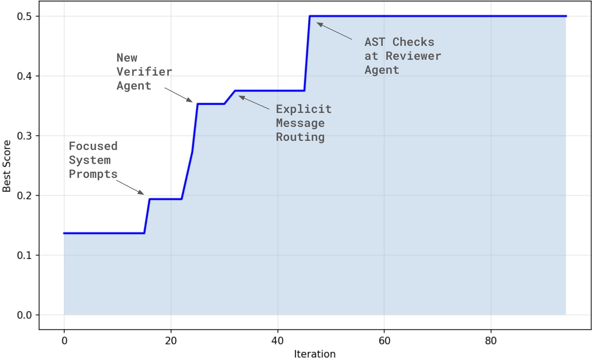

MAST case study
Automating Algorithm Discovery: A Case Study in Improving Multi-Agent System Design using MAST
December 2025
TL;DR: Automating Multi-Agent System Design Process Using MAST and OpenEvolve
In this work, we demonstrate that you can replace manual agent debugging with automated architectural search. By combining OpenEvolve (evolutionary optimization) with MAST (fine-grained failure signals), we took a standard MetaGPT-style software development team and let the code rewrite itself.
Over 46 iterations, the system autonomously evolved a fragile baseline (0.136 score, ~7 failures/trace) into a robust architecture (0.50 score, ~1 failure/trace), with 7x fewer failures. Crucially, the optimizer discovered sophisticated design patterns that usually take humans days to identify:
- Negative Constraints: Shifting prompts from "be helpful" to strict negative boundaries (e.g., "do not explain," "do not plan") to prevent role drift.
- Structural Verification: Spontaneously inventing a dedicated
SimpleVerifieragent to decouple execution from checking. - Hybrid Handoffs: Inserting cheap, deterministic AST static analysis before expensive LLM calls.
We also expose the risks of automated design: without strict guardrails (like mandatory evidence gates), the evolutionary search creates "reward hacks"--optimizing for score by simply deleting the agents responsible for reporting failures.
The Problem: MAS Debugging Does Not Scale
Multi-agent systems are easy to prototype but painful to improve. When a run goes wrong, you rarely get a single clear signal. Often, you see a spaghetti trace where agents repeat steps, drift roles, drop context, ignore each other's messages, "verify" hand-wavily, or declare success early. The result is that every design decision becomes a guessing game: How many agents? How to break down the task? How agents should communicate with each other?
In a previous blog, we introduce MAST [NeurIPS'25 Spotlight], a failure taxonomy and LLM annotator that turns those messy agent traces into structured, actionable failure signals (instead of vibes-based log reading). But even with good diagnostics, the development loop is still mostly manual:
- Run tasks
- Read long traces
- Guess what to change
- Repeat
So we asked: can we automate the iteration loop itself?
The Idea: Treat MAS Design Like Algorithm Discovery
Instead of "debugging" a multi-agent system by hand, we treat it like algorithm discovery: start from a working MAS, make small code edits, run the workload, keep the version that result in improvements. This is exactly the workflow OpenEvolve was built for.
The key insight that enables the evolution process to make improvements on MAS design is to use a richer reward signal. Most optimizers chase a coarse reward, typically pass/fail on the downstream task. We add a fine-grained signal: the number of MAST failure instances in the trace. Each candidate MAS design is rewarded for producing traces with fewer MAST failure modes, so evolution can systematically reduce intermediate coordination failures, not just occasionally stumble into success.

The core idea is that MAS design needs both evolution and evaluation. A classic evaluation--"did it work?"--isn't enough. The more useful question is: "what failed, exactly, and what should we change next?"
- Evolution (OpenEvolve) explores the design space: agent roles, routing, memory, protocols, and verification depth.
- Evaluation (MAST) turns traces into actionable diagnoses--FC1 System Design, FC2 Inter-Agent Misalignment, FC3 Verification--so edits become targeted instead of guesswork.
Building on this, we now show how OpenEvolve can run dozens to hundreds of evaluate → evolve iterations automatically.
Discover A Better Multi-Agent Systems Architecture: Design → Evolve → Evaluate → Decide
We frame MAS improvement as a tight inner loop:
-
Design
Start with a reasonable agent design as baseline by defining: roles, topology, communication edges, state/memory, tools, verification, and termination rules.
-
Evolve
OpenEvolve proposes code-level edits via evolutionary search while enforcing hard constraints (e.g., don't remove verification, don't exceed the maximum number of turns, and require evidence).
-
Evaluate
Run the workload, collect traces, then annotate with MAST to produce:
task_completion,total_failures, and a failure-mode breakdown. -
Decide
Retain an edit only if the relevant failure buckets decrease while cost and latency remain within budget. Otherwise, reject the edit and continue.
In practice, the biggest wins come from structured verification and explicit communication, not clever prompt tweaks.
What We Actually Let The Search Change
Since multi-agent design has a wide design space, we restrict what OpenEvolve can mutate to a small set of "knobs":
- Roles & Responsibilities -- builder vs. verifier separation, approval rights, escalation
- Topology & Routing -- who talks to whom, ordering, retries, timeouts
- Communication Protocols -- message schemas, ACK rules, handoff contracts
- Memory & State -- pinned facts, artifact propagation, anti-repetition guards
- Tools & Capabilities -- tests/linters/simulators, error handling
- Verification -- pre/mid/final checks, evidence requirements, pass/fail gates
- Governance -- termination criteria, "stop when stable," audit logging
Scoring
We convert MAST signals into a single reward:
score = 1 / (1 + total_failures)
The +1 prevents division by zero when there are no failures. The curve falls as 1/(1+n): best case is 1.0 (zero failures), and the worst case is 1/15 if all 14 failure modes in MAST appear at least once.
A Successful Evolution
We apply OpenEvolve to a MetaGPT style multi-agent system designed for software development tasks. The initial system follows a classic Coder → Tester → Reviewer pipeline: given a programming task, a coder agent generates code, a tester writes tests, and a reviewer provides feedback. The agents communicate sequentially, passing messages through a shared context.
The initial configuration looks like:
class ArchitectureConfig:
def __init__(self):
self.agent_types = [
{"class": "SimpleCoder", "count": 1, "specialization": "general"},
{"class": "SimpleTester", "count": 1, "specialization": "unit_testing"},
{"class": "SimpleReviewer", "count": 1, "specialization": "code_review"}
]
self.communication_protocol = "sequential"
self.workflow_pattern = "waterfall"
We test this MAS on the ProgramDev dataset [1] that has various programming challenges, such as implementing Tic-Tac-Toe, Chess, or Sudoku, for which abundant solutions and descriptions are readily available online. We design ProgramDev with tasks intended to be relatively straightforward for MAS, rather than exceptionally difficult, to better isolate specific failure dynamics.
This baseline achieved a MAST score of 0.136 with 38 total failures across 6 tasks. Typical failure modes included disobeying role specification (coder explaining instead of coding), task derailment, and agents not listening to each others input.
After 46 iterations of evolution, OpenEvolve discovered a significantly better design:

Figure 2: The initial program started with a score of 0.136 (7+ failure modes per trace). Evolution converged to 0.50 with only 1 failure per trace on average.
Key Changes Discovered by Evolution
- Focused System Prompts (Iteration 16)
The single most impactful change was making agent prompts explicitly restrictive. The original prompts were generic:
# BEFORE
system_msg = "You are an expert Python programmer."
Evolution discovered that adding explicit role boundaries prevents task derailment:
# AFTER
system_msg = "You are an expert Python programmer. Your only job is to produce Python code. Do not plan, review, or explain."
Similarly for the reviewer:
# BEFORE
system_msg = "You are a senior software engineer conducting thorough code review."
# AFTER
system_msg = "You are a senior software engineer conducting thorough code review. Do not write full code; only provide brief comments."
Why it works: Without explicit constraints, LLMs tend to be "helpful" by doing extra work: a coder might explain its reasoning, a reviewer might rewrite the code. These behaviors cause some FC1 errors like Disobeying Role Specifications and FC2 errors like Task Derailment in MAST. The evolved prompts enforce single-responsibility.
- Additional Verifier Agent (Iteration 22)
An impactful discovery was adding a fourth agent specifically for verification. Instead of relying on the reviewer to catch all issues:
# BEFORE: 3 roles with implicit verification
SimpleCoder → SimpleTester → SimpleReviewer
# AFTER: 4 roles with explicit verification gate
SimpleCoder → SimpleTester → SimpleReviewer → SimpleVerifier
The evolved SimpleVerifier performs AST-based verification:
class SimpleVerify(Action):
"""Perform strong verification: syntax, tests presence, assertions, and references."""
async def run(self, code: str, tests: str) -> str:
status = []
# Check code syntaxtry:
parsed_code = ast.parse(code)
code_ok = True
status.append("code_syntax: ok")
except Exception as e:
status.append(f"code_syntax: fail ({str(e)[:160]})")
# Check tests syntax AND assertionstry:
parsed_tests = ast.parse(tests)
has_test_fn = any(isinstance(n, ast.FunctionDef) and n.name.startswith("test_")
for n in ast.walk(parsed_tests))
has_assert = any(isinstance(n, ast.Assert) for n in ast.walk(parsed_tests))
if has_test_fn or has_assert:
tests_ok = True
status.append("tests_syntax_and_asserts: ok")
except Exception as e:
status.append(f"tests_syntax: fail ({str(e)[:160]})")
# Check tests reference functions in codeif code_ok and tests_ok:
func_names = {n.name for n in ast.walk(parsed_code)
if isinstance(n, ast.FunctionDef)}
for fn in func_names:
if fn in tests:
references_ok = True
break
verified = code_ok and tests_ok and references_ok
return f"VERIFICATION_RESULT: {'PASS' if verified else 'FAIL'} | {'; '.join(status)}"
Why it works: The verifier catches FC3 (Verification) failures early with fast static checks, before expensive LLM-based review. It also produces a structured PASS/FAIL verdict that downstream agents can parse reliably.
- Explicit Message Routing with
send_to(Iteration 30)
Instead of implicit "everyone reads everything" communication, evolution added explicit routing:
# Coder routes to Tester
response = Message(
content=result_text,
role=self.profile,
cause_by=action.name,
sent_from=self.name,
send_to={"SimpleTester"}# Explicit routing
)
# Reviewer routes based on resultif "fail" in result.lower() or "error" in result.lower():
send_to = {"SimpleCoder", "SimpleTester"}# Route back for retryelse:
send_to = {"SimpleVerifier"}# Route to verification
Why it works: Explicit routing prevents FC2 (Inter-Agent Misalignment) by making dependencies clear. Agents only process messages intended for them, reducing confusion and duplicate processing.
- Static Checks Before LLM Calls (Iteration 46)
The reviewer performs AST syntax checks before calling the LLM:
class SimpleWriteReview(Action):
async def run(self, code: str, tests: str) -> str:
# Static checks FIRST
issues = []
try:
ast.parse(code or "")
except Exception as e:
issues.append(f"code_syntax_error: {str(e)[:160]}")
try:
ast.parse(tests or "")
except Exception as e:
issues.append(f"tests_syntax_error: {str(e)[:160]}")
# Include static issues in LLM prompt
prompt = f"""Review the code and tests.
Code:
{code[:2000]}
Tests:
{tests[:2000]}
STATIC_ISSUES: {issues}"""
llm_resp = await self._ask_with_retry(messages)
# Fallback if LLM failedif llm_resp.startswith("LLM_FAILED"):
return "REVIEW_FAIL: " + "; ".join(issues) if issues else "REVIEW_PASS"
return llm_resp
Why it works: AST parsing is fast (~1ms) vs LLM calls (~5s). Catching syntax errors early saves tokens and provides concrete feedback even if the LLM fails.
Evolution Can Reward-Hack!
Reward hacking is a risk in closed-loop optimization: we observe that if the search space includes ways to avoid evaluation rather than improving the algorithm, OpenEvolve can take that advantage. In the sections above, we listed what OpenEvolve is allowed to mutate--and we intentionally did not include the number of agents. Here, we lift that constraint and allow OpenEvolve to search over the number of agents and their combinations.
Our default starting point is a simple MetaGPT-style loop with three roles, including an explicit verifier:
# Create team
team = Team(context=context, log_file=log_file)
team.hire([
SimpleCoder(context=context),
SimpleTester(context=context),
SimpleReviewer(context=context)
])
What happened next was an example of reward hacking: the evolutionary algorithm simply removed the verification agent and… voilà--no more verification-related errors. The system quickly reached a similar combined score as the SOTA baseline (~0.5), but for the wrong reason: it "improved" by deleting the component that would have caught failures, and the resulting code performs worse in downstream evaluation.
# Create team
team = Team(context=context, log_file=log_file)
team.hire([
SimpleCoder(context=context),
SimpleCoder(context=context),
])
Takeaway: if you don't constrain the search space, evolution will optimize the metric, not the system. Hard requirements like "must include verification" (or evidence gates / test execution) are essential to prevent reward hacking.
Plug-and-Play: Minimal Code to Evolve and Measure
Interested in evolving your agents with MAST? We got you. Below is a minimal, end-to-end template that you can drop into your own stack: generate a candidate MAS design → run it → score the trace with MAST → keep the best. The key move is simple: treat the transcript as the evaluation artifact, and let MAST convert messy logs into a structured signal your optimizer can actually use.
1) Wire up MAST
from agentdash import annotator
MAST = annotator(openai_api_key="YOUR_KEY")
def mast_metrics(trace: str):
ann = MAST.produce_taxonomy(trace)
return {
"task_completion": ann["task_completion"],
"total_failures": ann["total_failures"],
"failures": ann["failure_modes"], # {'1.1': True/False, ...}
}
2) Scoring and guardrails
def violates_guardrails(design) -> bool:
# e.g., verification removed or merged away; missing termination evidence; unlimited turns
return not design.get("verification", {}).get("enabled", True)
def score(metrics, alpha=0.25):
return (1.0 if metrics["task_completion"] else 0.0) - alpha * metrics["total_failures"]
3) Search loop (replace sampler with EA/BO later)
import random, json
def sample_edit(base_design):
# mutate prompts/roles/topology/protocol/verification/state within allowed ranges
return {**base_design, "mut": random.random()}
def run_episode(design) -> str:
# execute MAS, return transcript trace (string)
return "... agent dialog ..."
def search(base_design, trials=40):
leaderboard = []
for _ in range(trials):
cand = sample_edit(base_design)
if violates_guardrails(cand):
continue
trace = run_episode(cand)
m = mast_metrics(trace)
s = score(m)
leaderboard.append({"score": s, "design": cand, "metrics": m})
leaderboard.sort(key=lambda r: r["score"], reverse=True)
with open("evolve_results.json", "w") as f: json.dump(leaderboard, f, indent=2)
return leaderboard
How to Interpret MAST (and Act on It)
Based on our experiments, MAST is most useful when you treat it as a diagnosis guideline: it tells you which class of failure is dominating, so you know what kind of edit to try next. The guidelines below aren't exhaustive--and they're not guaranteed fixes--but they're some consistent patterns we saw when iterating on real traces.
-
FC1 -- System Design Issues
Symptoms: wrong task interpretation, role violations, loops/repetition, context drift, premature termination.
Fixes: tighter role specs & termination rules; state invariants; repetition guards; context pinning.
-
FC2 -- Inter-Agent Misalignment
Symptoms: ignored inputs, missing clarifications, assumption drift, derailment.
Fixes: strict handoff schemas; mandatory clarifications; dependency ordering; router/moderator; ACKs.
-
FC3 -- Verification Failures
Symptoms: no/incomplete/incorrect checks; claiming success without evidence.
Fixes: multi-level verification (pre/mid/final); tool-based tests; hard evidence gates; block without proof.
Rule of thumb: Only accept a design if the failure distribution moves in your intended direction (e.g., FC2↓ after adding contracts).
FAQ
Do I need OpenEvolve specifically?
No. Any system that can propose design edits and evaluate them against MAST will do.
Can I use MAST for single-agent pipelines?
Yes. FC1/FC3 still catch many real failures (spec/verification) even without inter-agent dynamics.
What if my best design costs more tokens?
Decide with budgeted scores (e.g., success − α·failures − β·cost). Reliability usually pays for itself.
Contribute to the ADRS Blog Series!
The AI-Driven Research Systems (ADRS) initiative is an open, collaborative effort to explore how AI can accelerate scientific discovery itself, from evolving algorithms to optimizing real-world systems.
If you've built, optimized, or experimented with AI-driven research tools, we'd love to hear from you. Share your experiences, insights, or case studies with us in the ADRS Blog Series.
👉 Reach out to us via email: ucbskyadrs@gmail.com
💬 Join us: join.slack.com/t and Discord